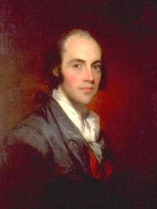

Aaron Burr
 Revolutionary War officer, attorney, and American political icon, Aaron Burr (1756-1836) maintained an Albany residence while he served in the New York State Assembly (1784-85 and 1798-99) and also while he was Attorney General of New York State (1789-91).
Previously, he had come to Albany to pursue admission to the New York Bar. During the early 1780s, he lived in quarters on what became South Pearl Street.
Citing ill health, in March 1779 Burr resigned his commission and retired from the Continental army. By that time, he had decided to pursue a legal career. Princeton educated, he first read for the law in New Jersey. He then clerked in Haverstraw but removed to Albany to complete the process that would lead to his admission to legal practice in New York.
Once in Albany, he was befriended by young Stephen Van Rensselaer who helped him settle in in a number of useful ways. Burr lodged for a time with two of Van Rensselaer's maiden aunts.
During 1781, Aaron Burr wrote a number of letters from Albany - mostly to Theodosia Bartow Prevost (a widow with two sons who was ten years his senior). They married in July 1782. Following the wedding, she took up residence with him in Albany. Before her death in 1794, she gave birth to four children but only her first-born namesake Theodosia (born in Albany in June 1783) lived beyond infancy.
With the patronage of Robert Yates, in January 1782, he was admitted to the New York Bar at Albany. He then opened a law office on the north side of what became Norton Street and practiced in Albany for eighteen months. Following the British evacuation, by late 1783 he removed to New York City where he established his primary base of operations. In 1790, the census fixed his official place of residence in New York City and was maintained by five slaves. His legal practice was extensive and of long duration.
In 1791, Burr was chosen to replace Philip Schuyler in the United States Senate. His triumph was resented by Schuyler's son-in-law, Alexander Hamilton who harbored long-term dislike and distrust of Aaron Burr.
During the chaos surrounding the contested Presidential election of 1800, Burr strove to appear to remain aloof from the controversy by remaining in Albany. In February 1801, his daughter Theodosia was married at the Albany Dutch church. In March, Aaron Burr was sworn in as vice-president of the United States.
After being installed as vice-president, Aaron Burr does not seem to have returned to Albany. Theodosia was lost at sea in 1813 - leaving her father heartbroken.
Aaron Burr lived until 1836. As luck would have it for this historian, regretably, his long life and extraordinary career had only a small early Albany part.
Portrait of Aaron Burr attributed to Gilbert Stuart. Oil on canvas, c. 1792-1794. New Jersey Historical Society #1854.1.
{kind=link}
The following excerpt comes from a work by one of the fathers of American political biography. After reading law for six months at Haverstraw, he thought himself competent to practice; an opinion to which an event of the time probably contributed. In November of this year, the legislature of New York passed an act disqualifying all the Tory lawyers from practicing in the courts of that State. Burr no sooner heard of this than he resolved to make an effort to realize part of its benefits himself, and, a few days after, he was in Albany for the purpose of applying for admission to the bar. But difficulties arose. The rule of the court was, that candidates must have spent three years in the study of the law before admission, and Colonel Burr could scarcely pretend to more than one year's study. Nor could he find a lawyer in the State willing to make a motion for the court to set aside the rule. In these circumstances, the candidate undertook the management of the case himself. Having first conciliated the good will of the judge in private, and made him acquainted with the grounds of his application, he appeared in court at the proper time, made the requisite motion, •and gave the reasons why he thought it should be granted. He said that he had begun his studies before the Revolution, and should long since have been entitled to admission to the bar, but for the service he had rendered as a soldier. " No rale," he observed, "could be intended to injure one whose only misfortune is having sacrificed his time, his constitution, and his fortune to his country." The court decided that the rule with regard to the period of study might, for the reasons given, be dispensed with, provided the candidate could show that he possessed the requisite knowledge. The examining counsel, as may be imagined, gave him no indulgence. They wished his failure. But after an examination, prolonged, critical, and severe, which he passed triumphantly, he was licensed as an attorney. This event occurred on the 19th of January, 1782. On the 17th of April following, he was admitted as counselor. He was then twenty-six years of age.
He took an office in Albany, began the practice of the law, and seems almost immediately to have been immersed in business. He had acquired celebrity in the State as a soldier, and no man of his years had a wider circle of acquaintance among the class who indulge in profitable suits at law. The old Tory lawyers, who had enjoyed all the best business, before the Revolution, were now thrown out of the ranks of the profession by an act of the legislature, and Whig lawyers of any standing or promise were, at the moment, extremely few. Burr's engaging manner, distinguished origin, indefatigable devotion to business, and honorable fame, would, in any circumstances, have rendered his advancement in the profession certain and rapid. But in the actual state of things, they obtained for him in a very few months as profitable a business as was enjoyed by any lawyer in the State. Before he had been in practice three months, he felt so sure of his position and so satisfied with his prospects, that there seemed no longer any necessity for delaying his marriage.
That Colonel Burr, the most [eligible and ascendant] young man in the State of New York, handsome, fascinating, well-born, and famous, whose addresses few maidens in the country would have been inclined to repulse, should have chosen to marry a widow ten years older than himself with two rollicking boys (one of them eleven years old), with precarious health, and no great estate, was a circumstance which seems to have been incomprehensible to his friends at the time, as it has since proved a puzzle to the writers of biographical gossip. Upon the theory that Burr teas the artful devil he has been said to be, all whose ends and aims were his own advancement, no man can explain such a marriage. Before the Revolution he had refused, point-blank, to address a young lady of fortune, whom his uncle, Thaddeus Burr, incessantly urged upon his attention. During the Revolution he was on terms of intimacy with all the great families of the State—the Clintons, the Livingstons, the Schuylers, the Van Rensselaers, and the rest; alliance with either of whom gave a young man of only average abilities, immense advantages in a State which was, to a singular extent, under the dominion of great families. But no considerations of this kind could break the spell which drew him, with mysterious power, to the cottage at remote and rural Paramus. From James Parton, Aaron Burr, p. 134.
We are looking to identify likely candidates. Perhaps one was the very aged Margarita Schuyler who died about 1782-83.